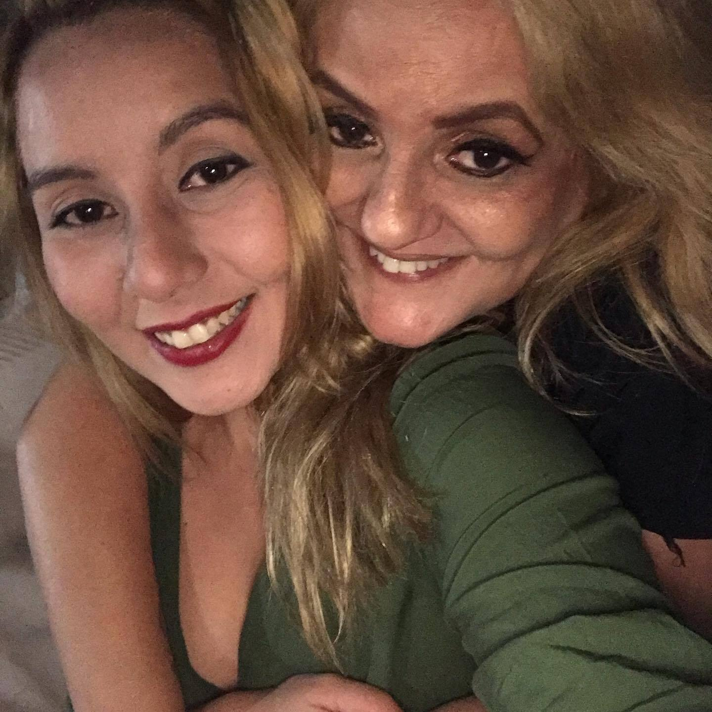
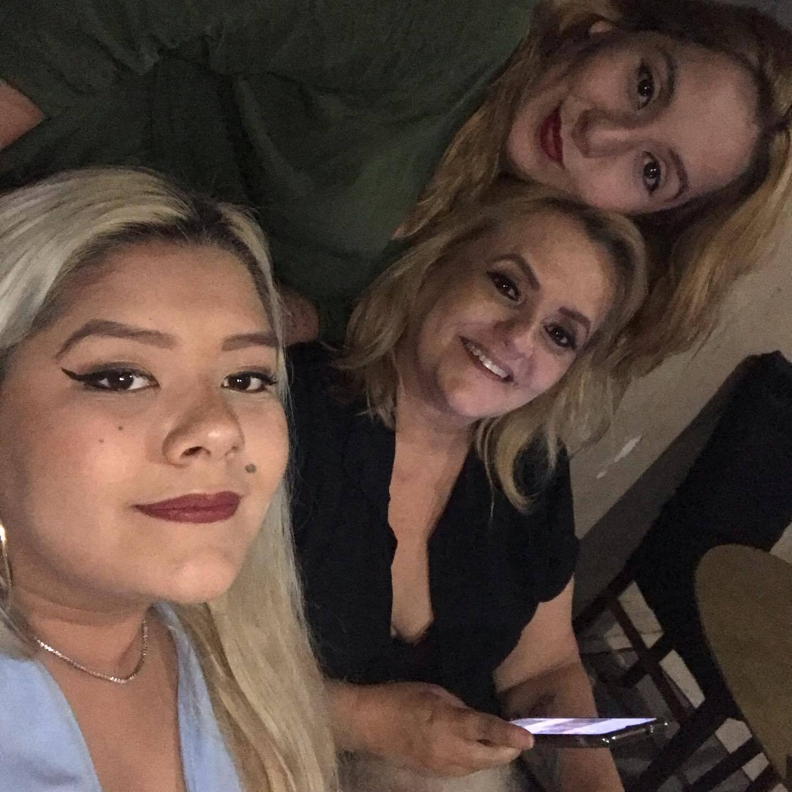
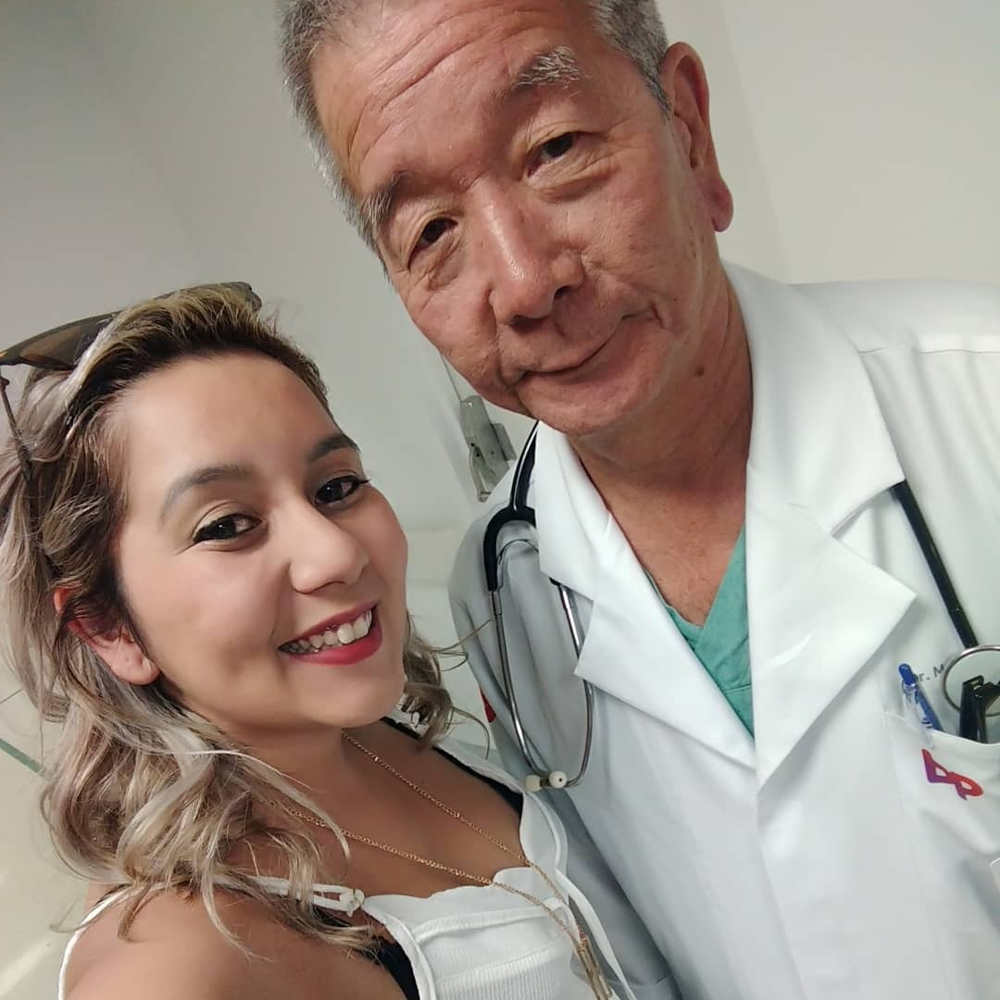
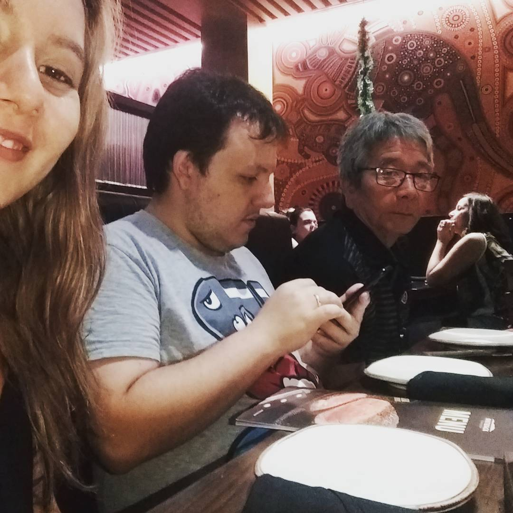
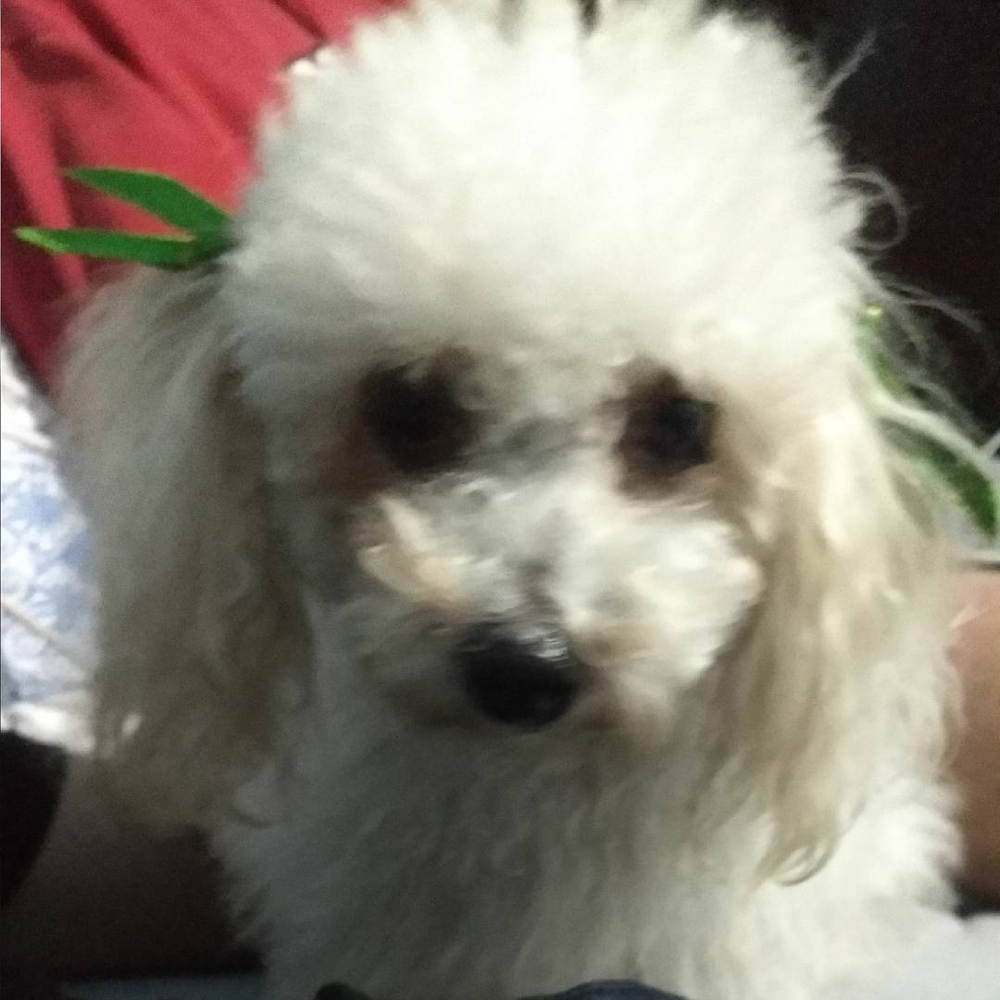

Sobre mim
Nascida em Santos, SP. Filha do Dr.Mauro e da Dona Maria Elizabete, irmã do Thiago, da Taís, da Giulia e do Júnior; Mãe da Mel;
Mudei para Florianópolis.
Já cursei Direito, Relações Internacionais. Quis ser diplomata um dia;
Já fiz Técnico em Transações Imobiliárias, um pouquinho de técnico em enfermagem. A verdade é que eu ainda estou me descobrindo.
Já me aventurei na área da política por querer implementar a Procuradoria da Mulher em Florianópolis e outras melhorias na cidade de Florianópolis.
Talvez seja um pouco culpa dos meus pais, pois sempre disseram que nem o céu era o limite. Porque caso eu estudasse, nem o céu era limite.
A verdade é que eu nunca estou satisfeita e sempre procurei saber um pouco mais, e a área do desenvolvimento é isso.
A área da tecnologia é tão ampla, e desenvolver é tão desafiador. Que talvez fosse isso que faltasse, porque hoje não penso em fazer mais nada!
Familia
    
Não poderia deixar de falar sobre a minha familia, pois tudo que sou hoje foram eles que me encorajaram a um dia ser quem eu quisesse.
Meu pai, sempre foi rígido com a escola. E hoje, eu agradeço esse pulso firme que ele teve. Era para me preparar para o mercado de trabalho e também para a vida;
Já minha mãe, era um pouco mais explosiva, mas nunca deixou de ser amorosa. Ela é o combo de amor e explosão (Brincadeira mãe, eu te amo);
O meu irmão Thiago, foi o meu incentivador para a área da tecnologia e também a pessoa que eu mais incomodo já que estava no DNA dele ser desenvolvedor;
Minha irmã Giulia, é delicada como o coice de uma mula, mas é um amorzinho se você souber relevar quando ela está com frio, fome e/ou sono. O que seria o dia todo, todos os dias.
Meus irmãos Taís e Júnior, eu não tive muito contato. A Taís faleceu antes de eu nascer, e o Júnior nasceu pouco tempo antes deu eu vir para Floripa. Mas daria a vida por ele também.
E o amor da vida da mamãe, a mel bebê. Que é a minha cachorrinha de 10 anos, e que é tudo na vida da mãe dela.
Cursos
Estou cursando Web FullStack na Digital House.
Fiz um intercâmbio linguistico para os Los Angeles, EUA.